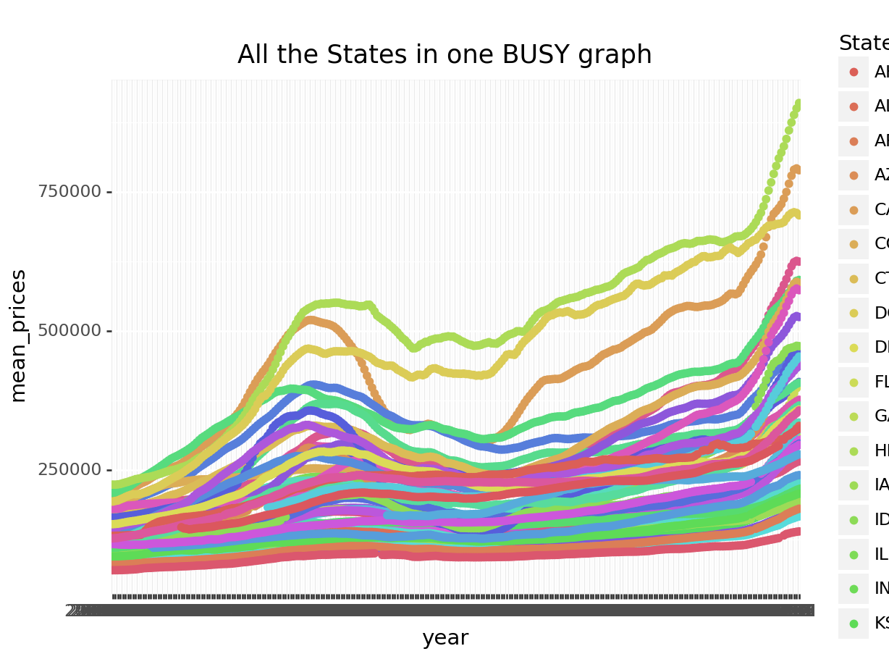

R and Python in Rstudio
This document is written in Rstudio with R and python being used in its creation. This task uses raw data from Zillow’s Home Value Index(all homes-mid-tier). I begin by doing a few small evaluations with R and compare them to similar functions in python. Both languages perform very well and have nearly the same capabilities for business intelligence. I already provided several documents with R so the primary focus here is on python's capabilities. I produce several graphs with their content and attributes being refined with each new graph.
Ultimately I ask:
When did North Carolina suffer the worst housing price downturn in the past 20 years? This question is easily answered through the last graph.
Read the file with R and assign to a variable.
Evaluating with R:
We will see:
- The first two columns of the data to see what type of data we are viewing
- The last two columns of the data to see if the data is the same, but this usually isn’t necessary.
- a statistical summary for the columns.
We can do a lot more with R but this task is more about what we can do with python.
head(Housing_Zillow,2)# A tibble: 2 × 4
RegionName StateName year mean_prices
<chr> <chr> <chr> <dbl>
1 California CA 2000-01-31 199988
2 California CA 2000-02-29 200838tail(Housing_Zillow,2)# A tibble: 2 × 4
RegionName StateName year mean_prices
<chr> <chr> <chr> <dbl>
1 Wyoming WY 2022-06-30 321393
2 Wyoming WY 2022-07-31 323793#colnames(Housing_Zillow) # this is redundant if you are also doing a summary
df <- Housing_Zillow
summary(df) RegionName StateName year mean_prices
Length:13821 Length:13821 Length:13821 Min. : 69390
Class :character Class :character Class :character 1st Qu.:138690
Mode :character Mode :character Mode :character Median :187479
Mean :213821
3rd Qu.:254413
Max. :909473
NA's :255 Python section:
This section tests the analysis capabilities for python and R to see if they are roughly the same. The values provided below are to make tidying the data quicker and the interpreting the data faster. This will allow us to create the visualizations and complete the task.
import pandas as pd
import numpy as np
import sklearn
import matplotlib.pyplot as plt
import seaborn as sns
import matplotlib
from plotnine import *
from numpy import nan
- This section reads in the data into a data frame.
We then perform an exploratory statistics analysis
- Min, Max, Mean
We also look at the dataframe’s general info
- Shape, Columns, Nulls, Zeros, and another general statistical summary
This is a count for how many Nulls are in each column:
RegionName 0
StateName 0
year 0
mean_prices 255
dtype: int64This is the Minimum Value for the column 'mean_prices': 69390.0This is the Maximum Value for the column 'mean_prices: 909473.0This is the Rounded Mean Value: 213820.84This is the Dataframe Shape: (13821, 4)This is the names for the Columns: Index(['RegionName', 'StateName', 'year', 'mean_prices'], dtype='object')<class 'pandas.core.frame.DataFrame'>
RangeIndex: 13821 entries, 0 to 13820
Data columns (total 4 columns):
# Column Non-Null Count Dtype
--- ------ -------------- -----
0 RegionName 13821 non-null object
1 StateName 13821 non-null object
2 year 13821 non-null object
3 mean_prices 13566 non-null float64
dtypes: float64(1), object(3)
memory usage: 432.0+ KB
Basic info: NoneA Statistical Summary for the data:
mean_prices
count 13566.000000
mean 213820.844906
std 105532.351446
min 69390.000000
25% 138690.000000
50% 187479.000000
75% 254413.000000
max 909473.000000Visualizations:
- This section will take the provided data and produce some graphs that should help decision makers make better decisions.
- While each graph is improving upon the last graph these graphs are far from useful.
# from plotnine import * Needed to produce the ggplots
(ggplot(df, aes("year", "mean_prices",color="StateName"))+
geom_point()+
labs(title = "All the States that will fit in one BUSY graph")
)
# Plotting the data for NC
df1 = df.loc[df['StateName'] == "NC"] # this locates a value within a column and saves to new df
fig, ax = plt.subplots() # creates subplots to overlay plots on top of one another
ax.plot(df1["year"], df1["mean_prices"])
plt.title("This graph is a little easier to read with just one state to plot,") # this adds a title to the graph
plt.xticks(fontweight='bold', color='blue', rotation=37) # This adds a blue color to the x-axis labels and rotates the to 37 degreesplt.show() # this shows the plot
Improving Visualizations:
While the second graph is easier to read, The x-labels make the graph a challenge to interpret to say the least. If I reduce the number of dates on the graph we can focus on a specific region and zoom in on what we need to view. We can focus on one value within a column to provide improved focus if necessary.
When did North Carolina suffer the worst housing price downturn in the past 20 years?
df1 = df.loc[df['StateName'] == "NC"] # This chooses a specific state
start = "2008-01-31" # This chooses which dates to look closer at
end = "2013-02-31" # This is the end date for closer view of the data
mask = (start < df['year']) & (df['year'] <= end) # This sets a beginning and end date
df2=df1.loc[mask]
df2['year'] = pd.to_datetime(df2['year']) # converts the year to date timedf2['year'] = df2['year'].dt.strftime('%Y-%m') # converts the year-month-day to year-month
# Begin visulizations
(ggplot(df2, aes("year", "mean_prices", color= "StateName"))+
geom_point()+
labs(title="This graph enables us to easily answer the question")+
theme(plot_background=element_rect(fill='gray'),
plot_title=element_text(color="salmon", face="bold"),
axis_text_x=element_text(color='blue', rotation =75,size =7),
panel_grid_major_y=element_line(color='black',size=1,linetype='dashed'),)
#geom_vline(xintercept = "2008-04-30", linetype = "dashed"),
)
run_time: 13.37 seconds.